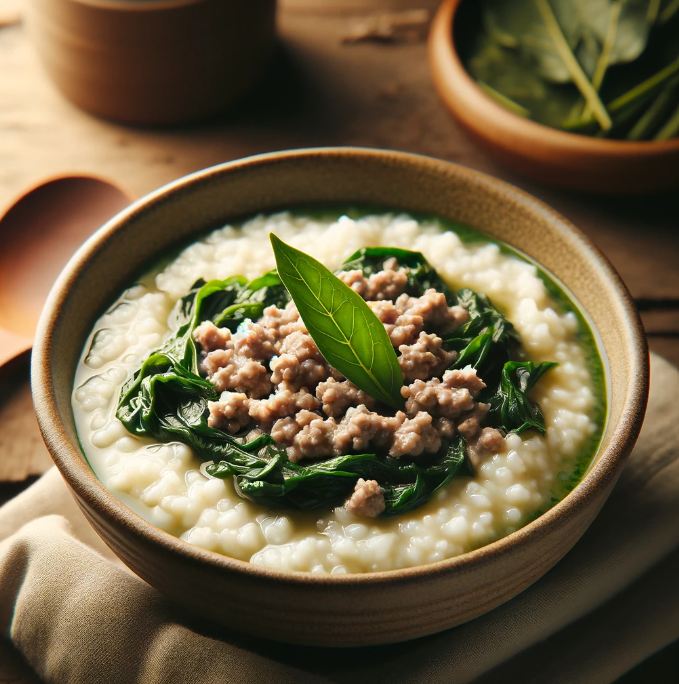

Overweight Meal Plans
Day 2
Home
Meal Plans
AM Snack

Lugaw with Lean Ground Meat and Chopped Malunggay Leaves
Ingredients
½ cup uncooked white rice (approximately 100 grams)
4 cups water
1 tablespoon lean ground meat (pork or chicken)
1 tablespoon chopped malunggay leaves
1/2 teaspoon chopped onion
1 clove garlic, minced
½ teaspoon olive oil
Salt and pepper to taste
Nutrition Facts
Calories
350 kcal
Protein
15 g
Total lipid (fat)
10 g
Carbohydrate, by difference
1.55 g
Meal Procedure
In a pot, wash the rice thoroughly. Add the water and bring to a boil.
Reduce heat and simmer for 15-20 minutes, or until the rice becomes soft and porridge-like, stirring occasionally to prevent sticking.
While the rice simmers, heat the olive oil in a separate pan over medium heat.
Sauté the chopped onion and garlic until softened.
Add the ground meat and cook until browned, breaking it up with a spoon.
Pour the cooked ground meat mixture into the pot with the lugaw.
Add the chopped malunggay leaves and stir gently.
Season with salt and pepper to taste.
Simmer for another minute or two, then turn off the heat.
Serve hot and enjoy.